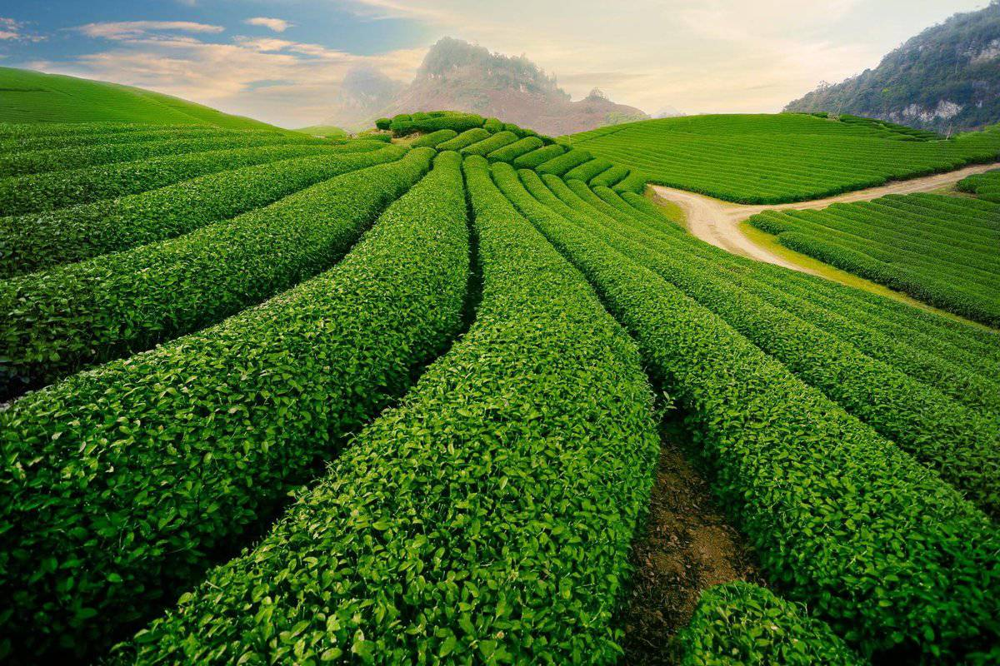
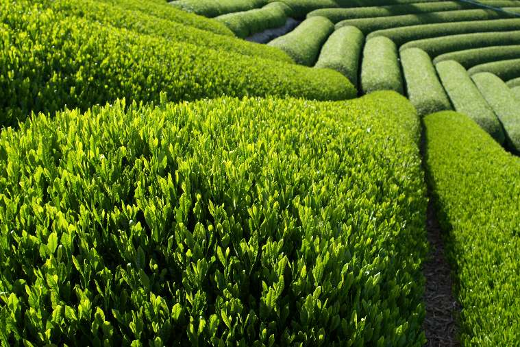
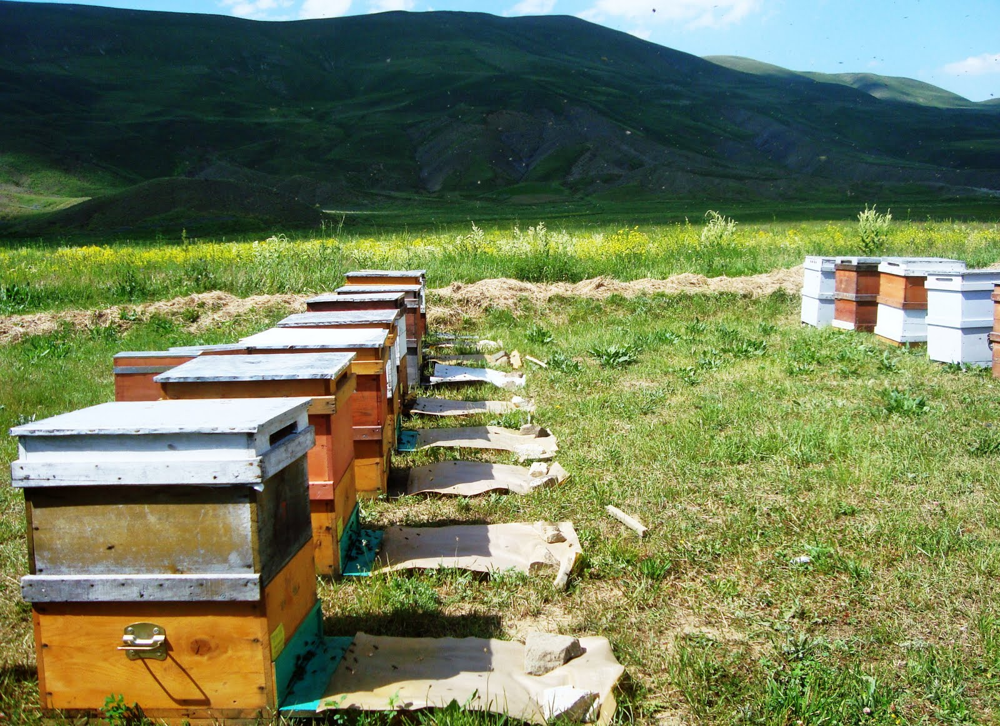
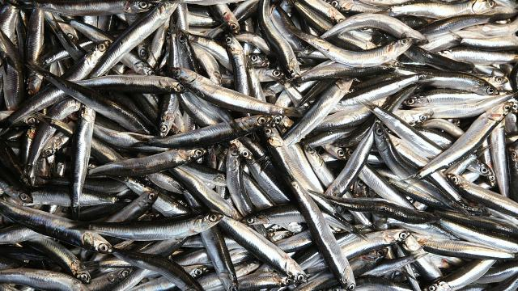
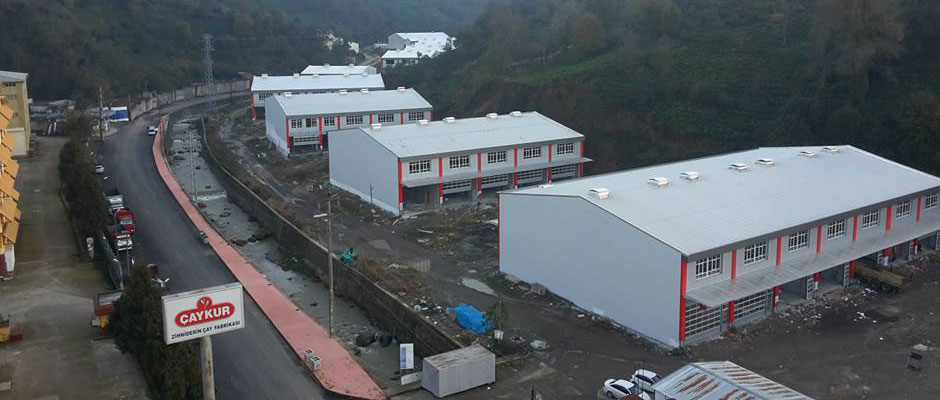
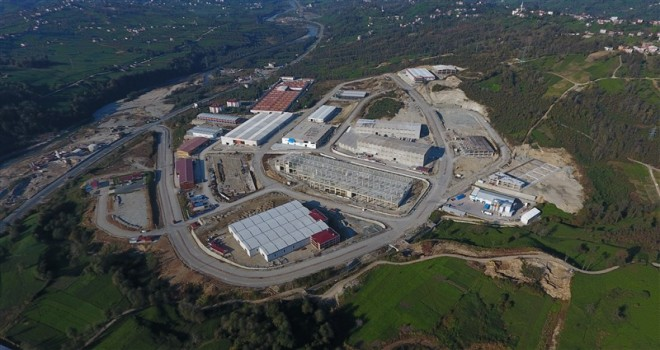

Rize ekonomisi, çay tarımına ve çay işleme sanâyiine dayanır. Su ürünleri (balıkçılık) ve orman ürünlerinin de ekonomiye faydası büyüktür. Faal nüfûsun % 70’e yakını tarım sektöründe çalışır. Rize’nin çayı, hamsi balığı ve ketenden yapılan Rize bezi meşhurdur.
1-TarımDağlık ve ormanlık bir alan olan Rize’de ovalar yok denecek kadar azdır. İl topraklarının sâdece % 1’i ovadır. Rize’de tarım denilince çay üretimi akla gelir. Türkiye’nin çay üretiminin üçte ikisine yakını Rize’de yetişir. İkliminin ılık oluşu ve bol yağış olması çay üretimine çok müsâittir. Çay tarımı 1940-1950 arasında yerleşmiş ve 1950’den sonra yaygınlaşmıştır. 40.000 hektarlık çay bahçelerinde ortalama 400.000 ton çay yetişir. Böylece çay tarımı Rize’nin esas tarım kolu olmuştur.
 Rize ilinde, çay tarımı yaygınlaştıkça mısır tarımı gerilemiş ve buna bağlı olarak hayvancılık da eski önemini kaybetmiştir. Fakat yayla ve platolar zengin otlak ve mer’alarla kaplıdır ve hayvancılığa çok müsâittir. Arıcılık hızla yayılmaktadır. İkizdere’nin anzer balı çok meşhur ve kıymetlidirBalıkçılık oldukça ileridir. Balık üretiminde Ordu, Trabzon ve İstanbul’dan sonra dördüncü sırada yer alır. Rize kıyıları bol ve kaliteli balık potansiyeline sâhiptir. Rize balıkçıları, 30-40 tonluk balıkçı tekneleriyle açık deniz balıkçılığı da yaparlar. Kıyılarında hamsi, kefal, istavrit, palamut, barbunya, kalkan, zargana, izmarit, mezgit, lüfer, kırlangıç, torik, karagöz, tirsi ve levrek gibi kıymetli balıklar bol miktarda bulunur. Fındıklı ilçesi Çağlayan köyünde alabalık üretme tesisleri vardır. Bâzı akarsularda da alabalık, incikefali, kayabalığı, denizanası bulunmaktadır..
 Rize’de sanâyi, çay işleyen fabrika ve atölyelere dayanır. Çay işleyen 20 fabrika ve 15 atölye, bu fabrikaların yedek parçası ve tâmiratını yapan ana tâmir fabrikası, çay paketleme ve ambalaj fabrikası vardır. Çay fabrika ve atölyelerinin dışında un fabrikaları, kereste fabrikaları, döküm fabrikaları, (lokum, reçel, helva ve şekerleme yapan) şekerli yiyecekler fabrikası, alüminyum mutfak eşyâsı üreten fabrika, balık unu ve balık yağı fabrikası ve çivi ve tel fabrikası gibi sanâyi kuruluşları vardır.
 